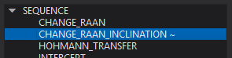
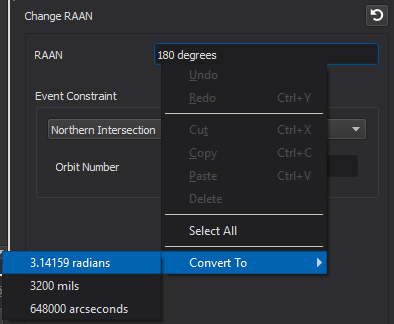
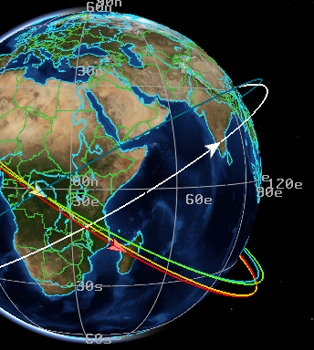

Astrolabe - Wizard¶
Astrolabe is a tool for easily creating and modifying mission sequences for space platforms.
Astrolabe works on a single platform at a time, and can modify the mission sequence for that platform. When writing a mission sequence to the input stack, Astrolabe will first attempt to update an existing mission sequence. If there is no such sequence, then Astrolabe will add the mission sequence to the end of the mover block in the platform’s definition. If there is no mover block (for example, if the mover is defined in the platform’s type, and no changes were needed in the platform’s definition), then the mission sequence is added to the end of the platform definition.
Astrolabe will make as few changes as possible to existing mission sequences. In particular, the units of event properties will not be modified unless the user explicitly changes them. In some cases, the exact ordering of the input commands will be permuted by Astrolabe.
When Astrolabe produces input into the input stack, an editor for the file modified by Astrolabe will be opened in Wizard, and the modifications will be entered into the Undo/Redo history so users can easily undo changes made by Astrolabe.
Controls¶
Astrolabe can be activated from context menus for space-domain platforms. When activated, Astrolabe will show the mission sequence for that platform. Additionally, the Astrolabe dock can be shown via the View menu.

The following describes the controls in Astrolabe.
1. Platform Selection
These controls provide two means of selecting the platform for which Astrolabe is displaying the mission sequence. First, users can select a platform in the drop down box. Second, users can select a platform from the map display using the tool button. In both cases, only space platforms that are locally controlled can be selected.
2. Reload Sequence
This button reloads the mission sequence from the input stack for the selected platform. This will overwrite changes that have been made to the sequence in Astrolabe, so this operation is verified with the user before overwriting any entered changes.
3. Status Message
Astrolabe will sometimes provide a status message giving updates on actions taken, warnings, or errors.
4. Verify
This button runs a verification on the current mission sequence. For details on this please see Mission Sequence Verification below.
5. Accept
This button accepts the changes to the mission sequence, and writes those changes to the input stack.
6. Add Mission Event
This button opens a drop down menu with every orbital event that Astrolabe supports. Selecting one will add a mission event of that type to the end of the mission sequence.
7. Transform Event
This button opens a drop down menu with every event type into which the currently selected event can be transformed. Selecting one of these items will transform the currently selected mission event into the selected type.
8. Move Event Up
This button moves the currently selected mission event up in the mission sequence, effectively swapping the order of the selected event and the event immediately preceding it.
9. Move Event Down
This button moves the currently selected mission event down in the mission sequence, effectively swapping the order of the selected event and the event immediately following it.
10. Remove Event
This button removes the currently selected event from the mission sequence.
11. Sequence Panel
This panel displays the mission sequence. By selecting an event in the mission sequence, the details of that event will be loaded in the Details Panel on the right side of Astrolabe. Events that have had changes made to them, but which have not been committed to the input stack via ‘Accept’ will have a ‘~’ appended to the event type in this panel.
This panel also shows the results of mission sequence verification, and the color key for the events in the orbit preview. Please see Mission Sequence Verification and Orbital Event Preview for details.
12. Details Panel
This panel displays the details of the currently selected mission event. Most of the contents of this panel depend on the specific event type being displayed. It is through this panel that users will modify the details of the events in the mission sequences they are designing.
For fields that require units, the input elements will display text in red until valid units are supplied. Further, for those input fields, the values can be automatically converted to equivalent units from entries in the context menu for that field.
13. Reset Modifications
This button resets any modifications made to the currently selected mission event.
Mission Sequence Verification¶
After a mission sequence is designed in Astrolabe, the sequence can be verified. This checks a number of details about the mission and mission events and informs the user if the given sequence is executable as designed. This verification uses an identical process to the verification that occurs when a mission sequence is initialized during an AFSIM simulation. This allows the user to quickly check for many errors in sequence construction without having to run the full scenario.
Verification occurs in two steps: first, the input is checked to assure that the event parameters are in their allowed ranges; second, the mission sequence is run through AFSIM’s standard verification process.
Errors in the first step are indicated with a dialog box outlining the problem. To make correcting the issue easier, the offending event is selected so that the user is directed immediately to the problem. In cases where there are multiple errors for a single event, these are all displayed at the same time. In cases where there are errors for multiple events, the user will be notified for only the first event in the sequence that has an out-of-range event parameter, so the user will have to select ‘Verify’ again until all such errors are corrected.
Once all event parameters are in range, the results of the verification process will be displayed in the Sequence Panel. Each entry in the sequence will display five additional columns of information, as well as a color key for use with the orbital event preview. In order, the extra columns of data are: the overall status of the verification, the delta-v cost of the event, the delta-v budget remaining on the platform, the simulation time of the event, and the date and clock time of the event. The meaning of these fields is described below.
The overall verification status of the event is a one-word summary of the results of the verification. The possible values are PASS, FAIL and Unverifiable. When an event has a PASS, that means that the event can proceed, all pre- and post-conditions on the event obtain, and that there is sufficient delta-v available to execute the event. An event will show FAIL when some condition for successful execution is not satisfied. To see the reason for the failure, hover the mouse over the FAIL indication and the resulting error messages will appear. An event is Unverifiable if there is some dependence on the actual state of the simulation for the execution of the event. The prototypical example of such an event is an Intercept event, which needs to know the state of the target platform before it can compute the details of the event. If any event either has a FAIL or Unverifiable status, all events following that will be unable to be verified, so there will be no additional information provided for events after such events.
The delta-v for each event lists the total delta-v used during that event. The delta-v budget gives the remaining delta-v available for the platform.
The Sim Time of the event is the number of seconds since the beginning of the simulation, and the Date of the event gives the equivalent date and clock time.
Note
Verification will not work for platforms with space movers that have initial states that are not sufficiently defined, or which rely on runtime setup of the initial conditions (e.g., Conjunction Setup Commands).
Orbital Event Preview¶
After the mission sequence has been verified, a preview of the mission sequence can be visualized in the Map Display - Wizard. To see these previews, an event that has had verification attempted must be selected in the Sequence Panel. For each event displayed, Astrolabe will display both the orbit before the event and the orbit after the event. The color of the displayed events will match the color indicated next to the event’s name in the Sequence Panel, with the orbit before the event drawn darker. If a sequence is selected, all events in that sequence will be previewed. To make it clear where the platform would be for the event, a wedge icon is placed on the orbit oriented so the arrow points along the final orbit of the particular event. In some cases the orbit before and after an event are identical (e.g., a staging event), in which case only one orbit is displayed.
For example, the following image shows the preview of an entire mission sequence.
